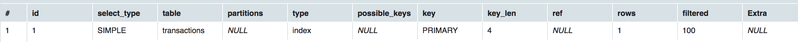
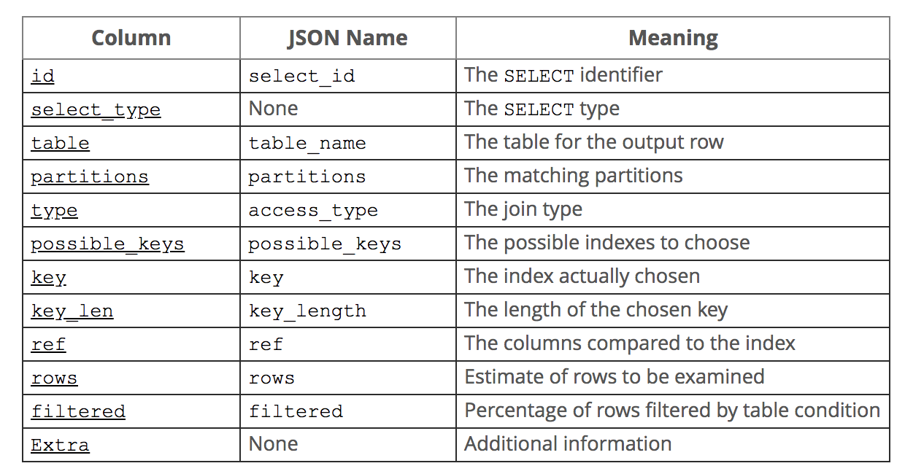
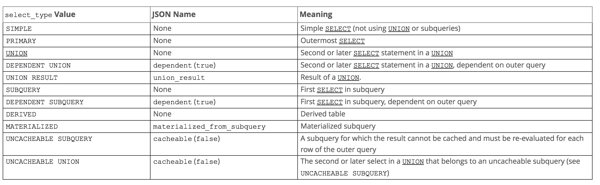

理解MySQL 执行计划 Explain
Contents
最近在看MySQL的书跟文章比较多，如何优化表的结构，字段设计，如何优化表的索引设计，如何优化查询语句。
但其实吧，在做任何优化之前，都应该要先了解:为啥查询会跑的慢? 需要了解MySQL是如何plan并执行现有的query语句，才能做出相应的优化。
在分析explain之前，先新建一个测试表格transactions并导入测试数据。
create table transactions (
id int not null auto_increment ,
`timestamp` int not null,
sender char(5) not null,
receiver char(5) not null,
`value` int not null,
primary key(id)
);
创建测试交易数据:
- 插入总计10万条数据.(别吐槽为啥不用100万，100万来回修改表格有点久).
- 插入随机的时间timestamp。
- 插入随机的sender，receiver，这里我取了uuid的前8位，使其具有一定的选择性。
- 插入随机的0~10000的value。
CREATE PROCEDURE load_data()
begin
declare v int default 0;
while v < 100000
do
insert into transactions(`timestamp`,sender,receiver,value)
values (UNIX_TIMESTAMP() + FLOOR(0 + (RAND() * 63072000)),LEFT(MD5(RAND()*100000), 5),LEFT(MD5(RAND()*100000), 5),RAND()*10000);
set v = v + 1;
end while;
end;
call load_data();
Explain 详解
explain <query>
对上述创建好的表格， 执行简单的query
explain select * from transactions order by id desc limit 1;
会返回这样一个表格，包含了id, select_type, table, paritions, type, possible_keys, key, key_len, ref, rows,filtered, extra 字段。 
官方 Explain的表格解释： 
分析下explain每个字段的含义。
ID
id 表示选择标识。
1. id相同时，执行顺序由上至下
2. 如果是子查询，id的序号会递增，id值越大优先级越高，越先被执行
3. id如果相同，可以认为是一组，从上往下顺序执行；在所有组中，id值越大，优先级越高，越先执行
4. 注意： 当row表示的是其它查询的并集（union操作）时，value可能是null，这时候value会表现成
举个例子，查询sender为“714af” 最近的第100笔交易。
explain
select
t1.id,
t1.sender,
t1.receiver,
t1.value from transactions t1 inner join (
(select t2.id, t2.timestamp from transactions t2 where t2.sender = "714af" order by timestamp desc limit 100,1)
union
(select t3.id, t3.timestamp from transactions t3 where t3.receiver = "714af" order by timestamp desc limit 100,1)
) t4
where t1.id = t4.id
+----+--------------+------------+------------+--------+---------------+---------+---------+-------+--------+----------+-----------------------------+
| id | select_type | table | partitions | type | possible_keys | key | key_len | ref | rows | filtered | Extra |
+----+--------------+------------+------------+--------+---------------+---------+---------+-------+--------+----------+-----------------------------+
| 1 | PRIMARY | <derived2> | NULL | ALL | NULL | NULL | NULL | NULL | 202 | 100.00 | NULL |
| 1 | PRIMARY | t1 | NULL | eq_ref | PRIMARY | PRIMARY | 4 | t4.id | 1 | 100.00 | NULL |
| 2 | DERIVED | t2 | NULL | ALL | NULL | NULL | NULL | NULL | 100125 | 10.00 | Using where; Using filesort |
| 3 | UNION | t3 | NULL | ALL | NULL | NULL | NULL | NULL | 100125 | 10.00 | Using where; Using filesort |
|NULL| UNION RESULT | <union2,3> | NULL | ALL | NULL | NULL | NULL | NULL | NULL | NULL | Using temporary |
+----+--------------+------------+------------+--------+---------------+---------+---------+-------+--------+----------+-----------------------------+
这里的id值为：1，1，2，3，NULL。
id执行规则检验：
根据id语句，跟上面提到的id执行顺序，查询顺讯操作是：
- 3 -> (t3)
- 2->(t2)
- NULL 生成衍生表 union(2,3)， t4
- 1-1, t1跟t4的inner join。
根据query语句，执行顺序应当是:
- (select t3.id, t3.timestamp from transactions t3 where t3.receiver = “714af” order by timestamp desc limit 100,1) -> t3
- (select t2.id, t2.timestamp from transactions t2 where t2.sender = “714af” order by timestamp desc limit 100,1) -> t2
- union(t3, t2) -> t4
- t1 inner join t4
两者是吻合的。
SELECT_TYPE
关于select_type, 官方的解释文档。  讲道理，这个column取名跟定义真的真的真的非常容易让人误解啊。。。
SIMPLE ： 最简单的select，不包含任何的union或者subquery。
mysql> explain select * from transactions where id = 1000; +----+-------------+--------------+------------+-------+---------------+---------+---------+-------+------+----------+-------+ | id | select_type | table | partitions | type | possible_keys | key | key_len | ref | rows | filtered | Extra | +----+-------------+--------------+------------+-------+---------------+---------+---------+-------+------+----------+-------+ | 1 | SIMPLE | transactions | NULL | const | PRIMARY | PRIMARY | 4 | const | 1 | 100.00 | NULL | +----+-------------+--------------+------------+-------+---------------+---------+---------+-------+------+----------+-------+PRIMARY: 指最外层的select，也就是说这时候有union或者subquery了，可以参考id👆实例， 其实这个说法有一定问题, 比如下面query显示都是SIMPLE。实在找不到一个精准的定义，姑且当成负责query最外层的select好了。
mysql> explain select * from transactions where id in (select id from transactions where sender = "714af"); +----+-------------+--------------+------------+--------+---------------+---------+---------+----------------------+-------+----------+------------+ | id | select_type | table | partitions | type | possible_keys | key | key_len | ref | rows | filtered | Extra | +----+-------------+--------------+------------+--------+---------------+---------+---------+----------------------+-------+----------+------------+ | 1 | SIMPLE | transactions | NULL | ALL | PRIMARY | NULL | NULL | NULL | 99750 | 10.00 | Using where| | 1 | SIMPLE | transactions | NULL | eq_ref | PRIMARY | PRIMARY | 4 | ethx.transactions.id | 1 | 100.00 | NULL | +----+-------------+--------------+------------+--------+---------------+---------+---------+----------------------+-------+----------+------------+UNION：union操作中第二个或者之后的select
找出用户为“714af”的所有交易.(这里当然可以用OR) mysql> explain select * from transactions where receiver = "714af" union all (select * from transactions where sender = "714af"); +----+-------------+--------------+------------+------+---------------+------+---------+-------+-------+----------+-------------+ | id | select_type | table | partitions | type | possible_keys | key | key_len | ref | rows | filtered | Extra | +----+-------------+--------------+------------+------+---------------+------+---------+-------+-------+----------+-------------+ | 1 | PRIMARY | transactions | NULL | ALL | NULL | NULL | NULL | NULL | 99750 | 10.00 | Using where | | 2 | UNION | transactions | NULL | ref | i_s | i_s | 5 | const | 5 | 100.00 | NULL | +----+-------------+--------------+------------+------+---------------+------+---------+-------+-------+----------+-------------+DEPENDENT UNION: union操作的第二个或者之后的select，取决于外部的query （这句话是什么鬼？）
mysql> explain select * from transactions where id in (select id from transactions where receiver = "714af" union all (select id from transactionswhere sender = "714af"); +----+--------------------+--------------+------------+--------+---------------+---------+---------+------+-------+----------+-------------+ | id | select_type | table | partitions | type | possible_keys | key | key_len | ref | rows | filtered | Extra | +----+--------------------+--------------+------------+--------+---------------+---------+---------+------+-------+----------+-------------+ | 1 | PRIMARY | transactions | NULL | ALL | NULL | NULL | NULL | NULL | 99750 | 100.00 | Using where | | 2 | DEPENDENT SUBQUERY | transactions | NULL | eq_ref | PRIMARY | PRIMARY | 4 | func | 1 | 10.00 | Using where | | 3 | DEPENDENT UNION | transactions | NULL | eq_ref | PRIMARY,i_s | PRIMARY | 4 | func | 1 | 5.00 | Using where | +----+--------------------+--------------+------------+--------+---------------+---------+---------+------+-------+----------+-------------+UNION RESULT：顾名思义，union的结果，这里就不举例子了，见👆id部分例子。
SUBQUERY： 子查询中的第一个select。
mysql> explain select * from transactions where id = (select SQL_NO_CACHEid from transactions where sender = "714af" limit 1); +----+-------------+--------------+------------+-------+---------------+---------+---------+-------+-------+----------+-------------+ | id | select_type | table | partitions | type | possible_keys | key | key_len | ref | rows | filtered | Extra | +----+-------------+--------------+------------+-------+---------------+---------+---------+-------+-------+----------+-------------+ | 1 | PRIMARY | transactions | NULL | const | PRIMARY | PRIMARY | 4 | const | 1 | 100.00 | NULL | | 2 | SUBQUERY | transactions | NULL | ALL | NULL | NULL | NULL | NULL | 99750 | 10.00 | Using where | +----+-------------+--------------+------------+-------+---------------+---------+---------+-------+-------+----------+-------------+DEPENDENT SUBQUERY: 子查询中的第一个SELECT，取决于外面的查询(这个取决于外面的查询，真的让人想打人。。。) 这里继续用DEPENDENT UNION的例子。
mysql> explain select * from transactions where id in (select id from transactions where receiver = "714af" union all (select id from transactionswhere sender = "714af"); +----+--------------------+--------------+------------+--------+---------------+---------+---------+------+-------+----------+-------------+ | id | select_type | table | partitions | type | possible_keys | key | key_len | ref | rows | filtered | Extra | +----+--------------------+--------------+------------+--------+---------------+---------+---------+------+-------+----------+-------------+ | 1 | PRIMARY | transactions | NULL | ALL | NULL | NULL | NULL | NULL | 99750 | 100.00 | Using where | | 2 | DEPENDENT SUBQUERY | transactions | NULL | eq_ref | PRIMARY | PRIMARY | 4 | func | 1 | 10.00 | Using where | | 3 | DEPENDENT UNION | transactions | NULL | eq_ref | PRIMARY,i_s | PRIMARY | 4 | func | 1 | 5.00 | Using where | +----+--------------------+--------------+------------+--------+---------------+---------+---------+------+-------+----------+-------------+DERIVED：派生表的SELECT(FROM子句的子查询)
mysql> explain select * from (select sender from transactions where sender = "714af" limit 1) a; +----+-------------+--------------+------------+--------+---------------+------+---------+------+-------+----------+-------------+ | id | select_type | table | partitions | type | possible_keys | key | key_len | ref | rows | filtered | Extra | +----+-------------+--------------+------------+--------+---------------+------+---------+------+-------+----------+-------------+ | 1 | PRIMARY | <derived2> | NULL | system | NULL | NULL | NULL | NULL | 1 | 100.00 | NULL | | 2 | DERIVED | transactions | NULL | ALL | NULL | NULL | NULL | NULL | 99750 | 10.00 | Using where | +----+-------------+--------------+------------+--------+---------------+------+---------+------+-------+----------+-------------+MATERIALIZED: 物化表，物化表的概念我的理解是`子查询结果将变成临时表，并存在内存在，优化后续查询（直接从内存临时表操作）
mysql> explain select * from transactions where sender in (select receiver from transactions where sender = "714af"); +----+--------------+--------------+------------+--------+---------------+------------+---------+--------------------------+-------+----------+-------------+ | id | select_type | table | partitions | type | possible_keys | key | key_len | ref | rows | filtered | Extra | +----+--------------+--------------+------------+--------+---------------+------------+---------+--------------------------+-------+----------+-------------+ | 1 | SIMPLE | transactions | NULL | ALL | NULL | NULL | NULL | NULL | 99750 | 100.00 | Using where | | 1 | SIMPLE | <subquery2> | NULL | eq_ref | <auto_key> | <auto_key> | 5 | ethx.transactions.sender | 1 | 100.00 | NULL | | 2 | MATERIALIZED | transactions | NULL | ALL | NULL | NULL | NULL | NULL | 99750 | 10.00 | Using where | +----+--------------+--------------+------------+--------+---------------+------------+---------+--------------------------+-------+----------+-------------+UNCACHEABLE SUBQUERY: 还是subquery，但是result不能被cache，我目前还没找到例子，回头找到了再补上。
UNCACHEABLE UNION: 还是Uniontype，但是result不能倍cache，同上，找到例子补上。
其实select_type更多的是告诉我们，该行对应的是query的哪个部分，同时，该部分返回的类型。
TABLE
Table 字段告诉我们，这一行数据是关于哪张表的，但有时候有一些衍生表。
- unionM,N : 这表是由row M跟row N的union结果表。
- derivedN : 这表是row N的衍生表.
- subqueryN : 这表是物化结果表，见👆物化例子。
TYPE
https://dev.mysql.com/doc/refman/8.0/en/explain-output.html#explain-join-types
这列是很重要的，告诉我们查询是那种类型，有没有应用索引。
先来个小总结，查询种类可以分为system->const->eq_ref->ref->ref_or_null->fulltext->index_merge->unique_subquery->index_subquery->range->index->all, 越往后往往对应查询性能越差。
SYSTEM: const 链接特有类型，表示只有一行满足条件，不过说真的，实际生产环境中很难碰到。
mysql> explain select * from (select * from transactions where sender = "50000" limit 1) a; +----+-------------+--------------+------------+--------+---------------+------+---------+------+-------+----------+-------------+ | id | select_type | table | partitions | type | possible_keys | key | key_len | ref | rows | filtered | Extra | +----+-------------+--------------+------------+--------+---------------+------+---------+------+-------+----------+-------------+ | 1 | PRIMARY | <derived2> | NULL | system | NULL | NULL | NULL | NULL | 1 | 100.00 | NULL | | 2 | DERIVED | transactions | NULL | ALL | NULL | NULL | NULL | NULL | 99750 | 10.00 | Using where | +----+-------------+--------------+------------+--------+---------------+------+---------+------+-------+----------+-------------+CONST: 表最多只有一行, 它将在开始查询时被读取。 因为只有一行，所以可以理解成常数。但查询得使用主键或者唯一键。
mysql> explain select * from transactions where id = "5000"; +----+-------------+--------------+------------+-------+---------------+---------+---------+-------+------+----------+-------+ | id | select_type | table | partitions | type | possible_keys | key | key_len | ref | rows | filtered | Extra | +----+-------------+--------------+------------+-------+---------------+---------+---------+-------+------+----------+-------+ | 1 | SIMPLE | transactions | NULL | const | PRIMARY | PRIMARY | 4 | const | 1 | 100.00 | NULL | +----+-------------+--------------+------------+-------+---------------+---------+---------+-------+------+----------+-------+REF_EQ: 从被查询表每次获取一行，跟查询表里面的每一行做对比。ref_eq 常常是用来比较两个表之间带索引的列. ref_eq通常使用的是
primary keyorunique index. 查询通常是这种格式：SELECT * FROM ref_table,other_table WHERE ref_table.key_column=other_table.column; SELECT * FROM ref_table,other_table WHERE ref_table.key_column_part1=other_table.column AND ref_table.key_column_part2=1;例子：
mysql> explain select * from transactions t1, transactions t2 where t1.id = t2.id limit 2; +----+-------------+-------+------------+--------+---------------+---------+---------+------------+-------+----------+-------+ | id | select_type | table | partitions | type | possible_keys | key | key_len | ref | rows | filtered | Extra | +----+-------------+-------+------------+--------+---------------+---------+---------+------------+-------+----------+-------+ | 1 | SIMPLE | t1 | NULL | ALL | PRIMARY | NULL | NULL | NULL | 99750 | 100.00 | NULL | | 1 | SIMPLE | t2 | NULL | eq_ref | PRIMARY | PRIMARY | 4 | ethx.t1.id | 1 | 100.00 | NULL | +----+-------------+-------+------------+--------+---------------+---------+---------+------------+-------+----------+-------+一般而言，ref_eq查询效率是仅次于const
REF: ref跟 ref_eq的区别在于采用的索引不是主键或者唯一索引。 举例，测试表里的主键是id，现在给sender跟receiver两个字段加上索引。 一个好的查询最次也得到ref级别，再低就准备优化吧。。。
alter table transactions add index i_s(sender), add index i_r(receiver); mysql> explain select * from transactions t1, transactions t2 where t1.sender = t2.receiver limit 2; +----+-------------+-------+------------+------+---------------+------+---------+------------------+-------+----------+-------+ | id | select_type | table | partitions | type | possible_keys | key | key_len | ref | rows | filtered | Extra | +----+-------------+-------+------------+------+---------------+------+---------+------------------+-------+----------+-------+ | 1 | SIMPLE | t2 | NULL | ALL | i_r | NULL | NULL | NULL | 99750 | 100.00 | NULL | | 1 | SIMPLE | t1 | NULL | ref | i_s | i_s | 5 | ethx.t2.receiver | 1 | 100.00 | NULL | +----+-------------+-------+------------+------+---------------+------+---------+------------------+-------+----------+-------+REF_OR_NULL: 如同REF， 但添加了MySQL可以专门搜索包含NULL的行。 子查询中经常使用到这个优化。 由于创建的测试表都是not null类型，加上跟ref差不多，这里就不给实例了，写个大概的查询例子。
SELECT * FROM ref_table WHERE ref_table.key_column=exrp or key_column is NULL;FULL_TEXT: 全文索引，暂时略过，通常对应的是MyISAM引擎，我反正一直用的是InnoDB.
INDEX_MERGE: 表示使用了索引合并优化方法，查询通常包含关键词or
mysql> explain select * from transactions where sender = "714af" OR receiver = "714af"; +----+-------------+--------------+------------+-------------+---------------+---------+---------+------+------+---------+-----------------------------------+ | id | select_type | table | partitions | type | possible_keys | key | key_len | ref | rows | filtered | Extra | +----+-------------+--------------+------------+-------------+---------------+---------+---------+------+------+---------+-----------------------------------+ | 1 | SIMPLE | transactions | NULL | index_merge | i_s,i_r | i_s,i_r | 5,5 | NULL | 6 | 100.00 | Using union(i_s,i_r);Using where | +----+-------------+--------------+------------+-------------+---------------+---------+---------+------+------+---------+-----------------------------------+注意，index_merge看上去是使用了索引，但当表的数量非常大时，其实查询速度还是非常的慢，这时候需要采用查询优化:分别都or的两个字段进行索引查询(ref级别）再union返回聚簇索引，再查询表格做内联得到要查询对象。
UNIQUE_SUBQUERY：替换了下面形式的IN子查询的ref，（无能为力，找不到一个这种类型的，回头补上）， works on unique index or primary key.
value IN (SELECT primary_key FROM single_table WHERE some_expr)unique_subquery是一个索引查找函数，可以完全替换子查询，效率更高。
INDEX_SUBQUERY: 跟unique_subquery 很像，但区别是采用的索引是non unique index。
RANGE: 检查给定索引的范围，这个查询还是很快的。
mysql> explain select * from transactions where id between 1000 and 2000; +----+-------------+--------------+------------+-------+---------------+---------+---------+------+------+----------+-------------+ | id | select_type | table | partitions | type | possible_keys | key | key_len | ref | rows | filtered | Extra | +----+-------------+--------------+------------+-------+---------------+---------+---------+------+------+----------+-------------+ | 1 | SIMPLE | transactions | NULL | range | PRIMARY | PRIMARY | 4 | NULL | 1001 | 100.00 | Using where | +----+-------------+--------------+------------+-------+---------------+---------+---------+------+------+----------+-------------+INDEX: 与ALL相同，但只有索引数被遍历，所以正常情况下是比ALL快的。
mysql> explain select id from transactions; +----+-------------+--------------+------------+-------+---------------+------+---------+------+-------+----------+-------------+ | id | select_type | table | partitions | type | possible_keys | key | key_len | ref | rows | filtered | Extra | +----+-------------+--------------+------------+-------+---------------+------+---------+------+-------+----------+-------------+ | 1 | SIMPLE | transactions | NULL | index | NULL | i_s | 5 | NULL | 99750 | 100.00 | Using index | +----+-------------+--------------+------------+-------+---------------+------+---------+------+-------+----------+-------------+ALL: 全表扫描。。。官文解释起来太复杂了，一句话，没有用到索引。
mysql> explain select * from transactions where value = "1000"; +----+-------------+--------------+------------+------+---------------+------+---------+------+-------+----------+-------------+ | id | select_type | table | partitions | type | possible_keys | key | key_len | ref | rows | filtered | Extra | +----+-------------+--------------+------------+------+---------------+------+---------+------+-------+----------+-------------+ | 1 | SIMPLE | transactions | NULL | ALL | NULL | NULL | NULL | NULL | 99750 | 10.00 | Using where | +----+-------------+--------------+------------+------+---------------+------+---------+------+-------+----------+-------------+
POSSIBLE_KEYS
指MySQL可能用哪些索引完成搜索。官文说，如果这列是NULL，则没有相关索引。 这句话又搞事情，搬出上面的例子:
```SQL
mysql> explain select id from transactions;
+----+-------------+--------------+------------+-------+---------------+------+---------+------+-------+----------+-------------+
| id | select_type | table | partitions | type | possible_keys | key | key_len | ref | rows | filtered | Extra |
+----+-------------+--------------+------------+-------+---------------+------+---------+------+-------+----------+-------------+
| 1 | SIMPLE | transactions | NULL | index | NULL | i_s | 5 | NULL | 99750 | 100.00 | Using index |
+----+-------------+--------------+------------+-------+---------------+------+---------+------+-------+----------+-------------+
```
嗯，换个理解方式会好些，如果是NULL，没有相关索引可以减少遍历，但可能是遍历索引数。
KEYS
指MySQL决定使用的索引，这个就比较给力了。 官文是这么解释的，keys的值一般是possible keys中的一种，当然也有可能最后没有使用任何一个possible keys。 这种case一般是covering index，或者遍历索引树。
对于InnoDB而言，二级索引也有可能包含整个要选的列，即使要选的列表中包含了主键，因为二级索引实现时自带主键。 也就是说
定义primary key（id）
定义二级索引 sender
实际上实现时，二级索引是（sender, id)
更多聚簇索引跟二级索引可以参考之前的索引文章高性能MySQL 第五章: 高效索引
KEY_LEN
顾名思义，MySQL 决定使用的key的长度，key自然是越短越好，查询更快。
REF
ref显示哪个列或常数与key一起从表中进行选择。
例子：比如下面的例子，查询id是1000的交易详情。ref值返回是常数。
mysql> explain select * from transactions where id = 1000;
+----+-------------+--------------+------------+-------+---------------+---------+---------+-------+------+----------+-------+
| id | select_type | table | partitions | type | possible_keys | key | key_len | ref | rows | filtered | Extra |
+----+-------------+--------------+------------+-------+---------------+---------+---------+-------+------+----------+-------+
| 1 | SIMPLE | transactions | NULL | const | PRIMARY | PRIMARY | 4 | const | 1 | 100.00 | NULL |
+----+-------------+--------------+------------+-------+---------------+---------+---------+-------+------+----------+-------+
ROWS
MySQL 认为它需要执行的行数，非常关键，优化查询的关键信息就在这，执行行数如果远大于返回行数，就要引起注意，需要优化了。
EXTRA
包含MySQL 解决查询的详细信息。这又是一个非常关键的列，信息量有点大，一一举例有点多，可以参考官文。EXPLAIN Extra Information
这里就列举几个比较关键的指标。
- Distinct ：一旦MYSQL找到了与行相联合匹配的行，就不再搜索了
- Using filesort: 看到这个一般就知道需要优化了，MySQL需要额外的步骤来发现如何排序。
- Using index: 代表了覆盖索引，数据量多的时候，最爱之一
- Using temporary：通常看到这个代表需要优化，跟覆盖索引同时出现时，还能接受。
- Using where: 删选出那些列进入到下一个query或者返回到client。
参考
Author lekai
LastMod 2018-11-01